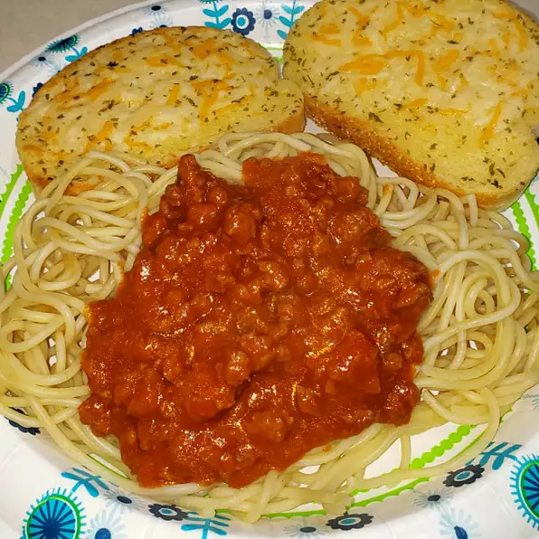

Spaghetti Recipe

Description
You'll love this traditional Italian spaghetti! The recipe is quick, easy, and affordable. It's perfect for a quick meal during your busy week!
All you need are the ingredients listed in this recipe, a few pots and pans, and about 20 minutes. The family is sure to love this take on spaghetti!
Ingreddients
- 1 pound spaghetti
- 2 pounds lean ground beef
- 1 onion, minced
- 1 (6 oz) can of tomato paste
- 2 (10.75 ounce) cans condensed tomato soup
- 2.5 cups water
Steps
- Bring a large pot of lightly salted water to a boil. Add pasta and cook for 8 to 10 minutes or until al dente; drain.
- In a large skillet over medium heat, cook ground beef with onion until meat is brown. Drain. Return meat mixture to pan with tomato paste, tomato soup and water. Cook, stirring, until heated through and thickened, 5 to 15 minutes. Serve over cooked pasta.
Home